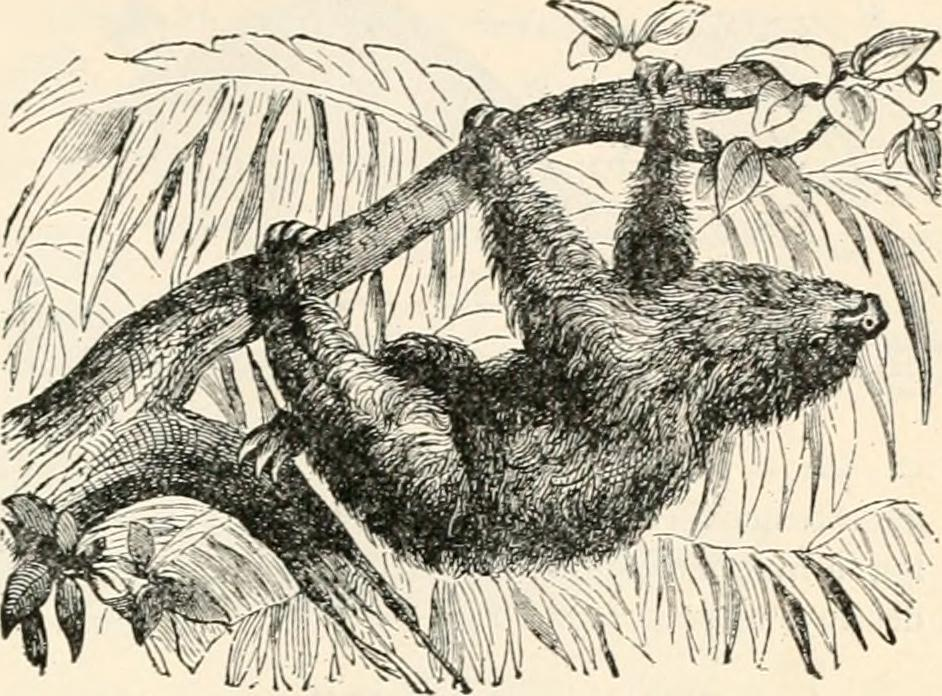

Sloths are mammals classified in the families Megalonychidae (two-toed sloths) and Bradypodidae (three-toed sloths), including six extant species. They are named after the capital sin of sloth because they seem slow and lazy at first glance; however, their usual idleness is due to metabolic adaptations for conserving energy.
Aside from their surprising speed during emergency flights from predators, other notable traits of sloths include their strong body and their ability to host symbiotic algae on their furs.
They are classified in the order Pilosa because they are related to anteaters, which sport a similar set of specialized claws. Extinct sloth species include many megafaunal ground sloths, some of which attained the size of elephants, as well as a few species of marine sloths. Extant sloths are medium-sized arboreal (tree-dwelling) residents of the jungles of Central and South America.
Sloths make good habitats for other organisms, and a single sloth may be home to moths, beetles, cockroaches, fungi, ciliates, and algae.
